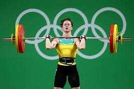
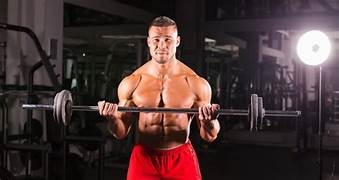
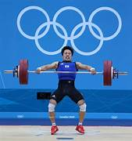

Game Overview
Introduction to Weightlifting
Weightlifting, also known as Olympic weightlifting, is a sport in which athletes attempt to lift the maximum weight possible in a single lift of a barbell loaded with weight plates. It is one of the oldest competitive sports and has been a part of the modern Olympic Games since their inception in 1896.
History of Weightlifting
Ancient Origins
Ancient Greece and Egypt: Early forms of weightlifting can be traced back to ancient civilizations like Greece and Egypt, where lifting heavy stones and objects was a test of strength.
China: Historical records show that weightlifting was practiced in ancient China as a way to evaluate a person's physical prowess and health.
Modern Development
19th Century: Weightlifting as a competitive sport began to take shape in Europe in the late 19th century, with organized competitions emerging in countries like Austria and Germany.
Olympic Inclusion: The sport was included in the first modern Olympic Games in Athens in 1896. Initially, the competition included one- and two-handed lifts.
Evolution: The sport evolved over the years, with the establishment of weight classes and standardized lifts. The two primary lifts, the snatch and the clean and jerk, were standardized in the mid-20th century.
Basic Rules and Gameplay Mechanics
The Lifts
Snatch: The athlete lifts the barbell from the ground to overhead in one continuous motion. The lift requires a combination of strength, speed, and technique.
Clean and Jerk: This lift is divided into two parts. First, the athlete lifts the barbell from the ground to the shoulders (clean). Then, they push the barbell overhead (jerk). It is considered the ultimate test of strength and technique.
Competition Structure
Weight Classes: Athletes compete in different weight classes to ensure fair competition.
Attempts: Each lifter is allowed three attempts in both the snatch and the clean and jerk. The best successful lift in each is combined to determine the athlete's total score.
Order of Lifting: Athletes lift in a predetermined order based on their declared starting weights. The athlete with the lowest declared weight lifts first.
Tiebreakers: In case of a tie, the lifter with the lower body weight wins. If still tied, the lifter who achieved the total weight first is declared the winner.
Technical Rules
Lift Execution: The lifts must be executed according to strict technical rules. For instance, the barbell must be lifted in a continuous motion, and the lifter must maintain control of the barbell throughout the lift.
Judging: Three referees judge each lift. A lift is deemed successful if at least two of the three referees signal a good lift by pressing a white button.
Fouls: Lifts can be disqualified for reasons such as incomplete extension, touching the platform with any part of the body other than the feet, or lowering the barbell before receiving the referee's signal.
Weightlifting Equipment
Barbell: The standard barbell weighs 20 kg for men and 15 kg for women. The barbell includes rotating sleeves to reduce the torque on the lifter's wrists.
Weight Plates: Plates come in various weights and are color-coded for easy identification. They are added to the barbell to achieve the desired lifting weight.
Collars: These are used to secure the weight plates on the barbell.
Lifting Platform: The platform is typically 4 meters by 4 meters and is designed to provide a stable and safe surface for lifting.
Benefits of Weightlifting
Strength and Power: Weightlifting is excellent for building overall strength and power.
Technique and Coordination: The lifts require precise technique and coordination, improving an athlete's motor skills.
Flexibility and Balance: The sport enhances flexibility and balance, as the lifts require a full range of motion and stability.
Weightlifting is a dynamic and challenging sport that combines physical strength with technical skill. Its rich history and strict rules ensure a fair and exciting competition for both athletes and spectators.
Game Highlights
Memorable Moments
First Olympic Games (1896): Weightlifting was featured in the first modern Olympic Games in Athens. The competition included one-handed and two-handed lifts, setting the stage for the sport's Olympic future.
Naim Süleymanoğlu’s Triple Gold (1988, 1992, 1996): Known as "Pocket Hercules," Naim Süleymanoğlu is one of the greatest weightlifters of all time. Standing at just 4 feet 10 inches, he won gold medals in three consecutive Olympic Games and set multiple world records.
Leonid Taranenko’s Clean and Jerk Record (1988): Leonid Taranenko of the Soviet Union set the world record in the clean and jerk with a lift of 266 kg, a record that still stands in the old weight classes.
Lü Xiaojun’s Dominance (2012, 2016, 2021): Chinese weightlifter Lü Xiaojun has become one of the sport's most dominant figures, winning gold medals in the 2012 and 2021 Olympics, and a silver medal in 2016. He has set numerous world records in the process.
Svetlana Podobedova's Comeback (2012): Competing for Kazakhstan, Svetlana Podobedova won gold in the women's 75 kg category at the 2012 London Olympics, overcoming injuries and a dramatic finish to secure her place in history.
Key Players and Characters
Naim Süleymanoğlu: A legend in the sport, Süleymanoğlu's career was marked by his incredible strength and multiple world records. His rivalry with Valerios Leonidis at the 1996 Atlanta Olympics is considered one of the greatest moments in Olympic history.
Pyrros Dimas: Representing Greece, Pyrros Dimas won three consecutive Olympic gold medals (1992, 1996, 2000) and a bronze in 2004. His popularity in Greece and his charismatic personality made him a beloved figure in the sport.
Kakhi Kakhiashvili: Kakhiashvili, a Georgian-Greek weightlifter, won three Olympic gold medals (1992, 1996, 2000) in two different weight categories, showcasing his versatility and dominance.
Lü Xiaojun: Known for his impressive technique and consistency, Lü Xiaojun is one of the most successful weightlifters in recent history, with multiple Olympic and World Championship titles.
Tatiana Kashirina: Russian weightlifter Tatiana Kashirina has set multiple world records in the women's super heavyweight category and has won numerous World Championships and an Olympic silver medal.
Important Tournaments and Events
Olympic Games: The pinnacle of weightlifting competition, the Olympic Games feature the best lifters from around the world competing for gold, silver, and bronze medals. Weightlifting has been part of the modern Olympics since 1896.
World Weightlifting Championships: Held annually, the World Championships are a key event in the weightlifting calendar, attracting top lifters who compete for world titles and set new records.
European Weightlifting Championships: This annual event brings together the best lifters from across Europe. It is one of the most prestigious continental competitions in the sport.
Asian Weightlifting Championships: Featuring top lifters from across Asia, this annual championship is crucial for lifters in the region, providing a platform for setting records and achieving continental titles.
Pan American Weightlifting Championships: This annual competition features athletes from the Americas, showcasing top talent from North, Central, and South America.
Weightlifting's rich history is filled with memorable moments, legendary athletes, and prestigious competitions. From the early days of the Olympic Games to the modern era of world records and international championships, weightlifting continues to captivate audiences with its display of strength, technique, and determination.